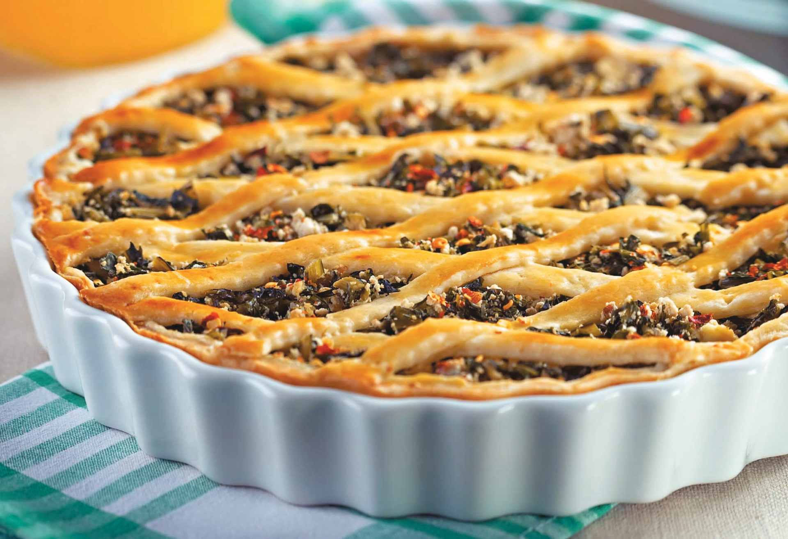

Tortas salgadas
Torta de catalônia

Ingredientes
- 2 maços de catalônia
- 100 g de bacon picado
- Sal e pimenta vermelha picada a gosto
- 300 g de ricota
- 500 g de massa folhada
Modo de preparo
- Pré-aqueça a 200 °C. Escalde a catalônia, escorra, esprema e pique. Doure o bacon, junte a folha e tempere; esfrie e misture a ricota.
- Abra a massa (~3 mm), forre forma de 26 cm, recheie e faça grade. Asse 50 minutos até dourar.
Observação
Catalônia é amarga; troque por escarola ou espinafre se preferir sabor mais suave.